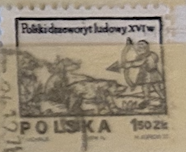
| SOURCE | TITLE| IMAGE MATCH | click to source page |
| eBay | Briefmarke: Serie Alle Welt: 1,50 Zk, Polska | eBay | 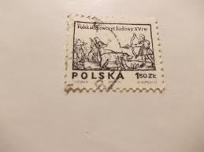 |
| Old-Stamps.com | Polski drzeworyt ludowy XVI W. / Polska 1974 | 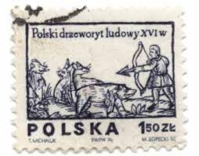 |
| HipStamp | Poland 2071 archer | Europe - Poland, General Issue Stamp / HipStamp | 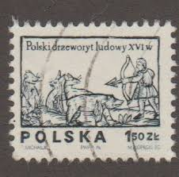 |
| Todocolección | polonia 1974 scott 2071 sello º arte pintura ca - Buy Antique stamps of Poland on todocoleccion | 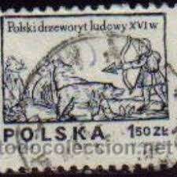 |
| ebid.net | Grenada Grenadines 1977 Christmas 1/2c MNH Stamp on eBid France | 190565856 | 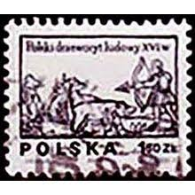 |
| Dreamstime.com | Vintage Hunter Pocket Watch Molnija Editorial Image - Image of antique, crown: 108524005 | 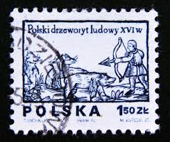 |
| Dreamstime.com | Hunter with Bow and Arrow, Designs from 16th Century Woodcuts Serie, Circa 1974 Editorial Stock Photo - Image of issue, 1974: 141642083 | 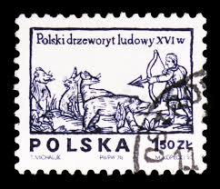 |
| Alamy | Stamp printed in poland portrait Cut Out Stock Images & Pictures - Alamy | 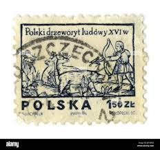 |
| CollectorBazar | Poland 1974 Wood Carvings mnh | 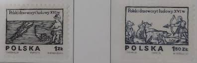 |
| Dreamstime.com | Stamp Printed in Poland Shows Hunter with Bow and Arrow, Polish Folklore. Designs from 16th-century Woodcuts Editorial Photo - Image of europe, circa: 185760371 | 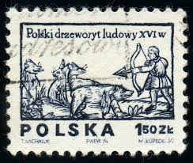 |
| eBay UK | POLAND 1975 Folklore: 16th Century Wood Carvings (#1). Set of 2. MNH SG2337/2338 | eBay UK |  |
| Osta | Poola 1974-1977, puulõiked, kunst. (218338948) - Osta.ee | 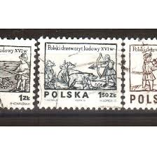 |
| polska-filatelistyka.co.uk | Poland 1974 - Fi 2203-2204 MNH** - Polska Filatelistyka |  |
| Todocolección | polonia - polska - 2 zloty - 1977 - Compra venta en todocoleccion | 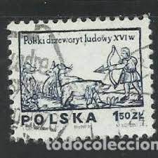 |
| Интернет-магазин монет и банкнот | Марка «Доспехи крылатого гусара XVII век» 1973 год Польша №19-83620 — Иностранные в интернет-магазине «Монеты» | 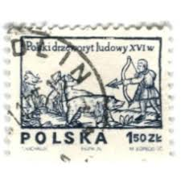 |
| Dreamstime.com | Woodcut Letters Stock Photos - Free & Royalty-Free Stock Photos from Dreamstime | 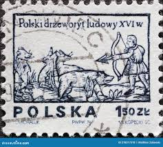 |
| Dreamstime.com | Woodcut Pig Stock Photos - Free & Royalty-Free Stock Photos from Dreamstime | 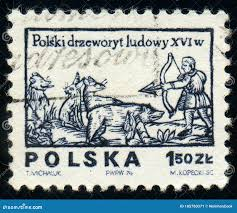 |
| ebid.net | Poland 1974 SG2338 po2 Polish Folklore 1z.50 Used Stamp on eBid United Kingdom | 179042817 | 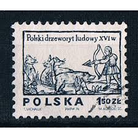 |
| eBay Australia | Poland 1974,16th century woodcut, Hunter with wild animals, SG 2338, fu. | eBay Australia | 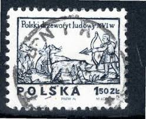 |
| Dreamstime.com | 231 Woodcuts Stock Photos - Free & Royalty-Free Stock Photos from Dreamstime | 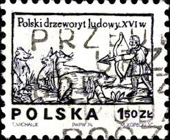 |
| Polska6.pl | Znaczki Polska6.pl - Sklep filatelistyczny | 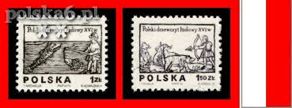 |
| iStock | Stamp Showing The Monument Toghetto Heroes In Warsaw Stock Photo - Download Image Now - iStock | 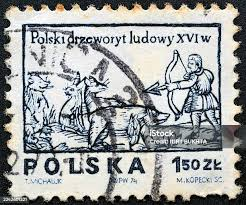 |
| HipStamp | Poland 1974 #2071,2071b, Woodcuts, Used/cto. | Europe - Poland, General Issue Stamp / HipStamp |  |
| Мешок | Польша злот» в разделе Европа. по возрастанию даты окончания, стр. 5 | 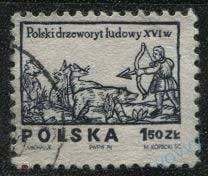 |
| Hanmart | Stamp Poland 1974 Mi 2350-2351 MNH |  |
| Shutterstock | Poland-circa 1974postage Stamp Printed By Poland Stock Photo 2684450793 | Shutterstock |  |
| YouTube | STAMPS NR 101. POLSKA 150 ZK - YouTube | 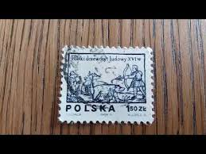 |
| Мешок | Итальянская гравюра на дереве 16-18 веков. 1963г» на Мешке Фиксированная цена | 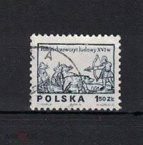 |
| MyViMu.com | Tarnów w Domowa Kolekcja w MyViMu.com | 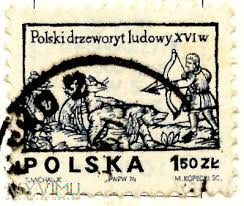 |
| Dreamstime.com | Michaluk Stock Photos - Free & Royalty-Free Stock Photos from Dreamstime | 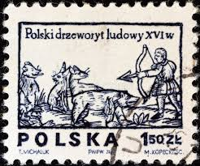 |
| volstamp.in.ua | Buy 1977 North Korea stamp series (Fauna, fish) Used №1668-1672 | 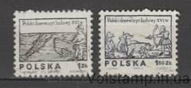 |
| OLX Poland | Dla Ciebie wszystko - po 1 zł - w kategorii Filatelistyka | 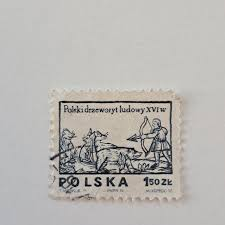 |
| Allegro | Fi 2390-2391 ** Polski drzeworyt ludowy XVI w. • Cena, Opinie - Allegro | 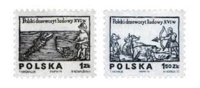 |
| Shutterstock | Bow Arrow Vintage: Over 4,333 Royalty-Free Licensable Stock Photos | Shutterstock | 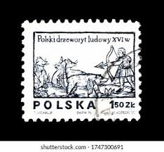 |
| Alamy | POLAND — 1977 December 12: 4.50 zloty dark brown postage stamp depicting Beekeeper. Design from 16th century woodcut. Beekeepers are also called honey farmers, apiarists, or less commonly, apiculturists. The term beekeeper | 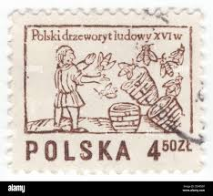 |
| Allegro | 2266 - Polska - znaczki pocztowe - Allegro.pl | 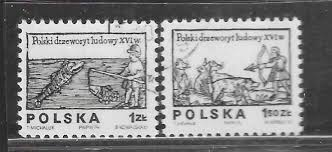 |
| Blogger.com | The Postal Picture: May 2015 | 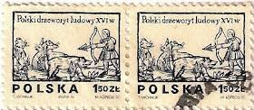 |
| Alamy | Medieval illustration hi-res stock photography and images - Page 2 - Alamy | 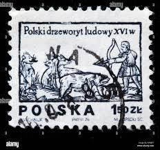 |
| 10 GR POCZTA 0 0 이지수 POLSKA KUNECKIS C 6.00 POLSKA A A BALCERZAK ថទ PWPN72 2 1.00 Polski drzeworyt ludowy XVIW PokkidrzcworytludowyXViw w POLSKA LMOCHALLY MoCHA PWPW T4 150ZK ZE M | 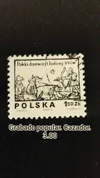 | |
| Osta | Poola " KALAPÜÜK / JAHT " 1974 (227179513) - Osta.ee | 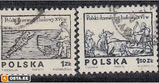 |
| Todocolección | sello polonia. mi pl 2343 año 1974. paje floren - Buy Antique stamps of Poland on todocoleccion | 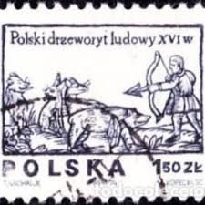 |
| YouTube | Postage stamp. POLSKA. Polski drzeworyt ludowy 16w. Price 4.50 Zl - YouTube | 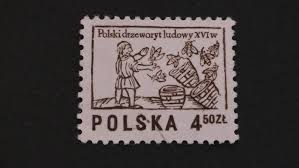 |
| Alamy | Archer 16th century hi-res stock photography and images - Alamy | 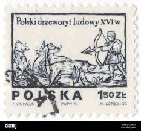 |
| Aukro | Známka - Polsko | Aukro | 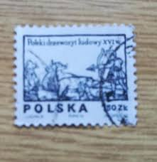 |
| HipStamp | Poland #2070-2071B 16th Century Woodcuts; Used (1.00) | Europe - Poland, General Issue Stamp / HipStamp |  |
| Mystic Stamp Company | 2071A-B - 1977 Poland - Mystic Stamp Company |  |
| What would something like this be worth? | 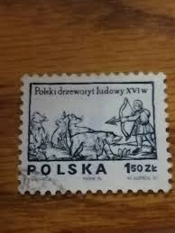 | |
| eBay UK | POLAND 1975 Folklore: 16th Century Wood Carvings (#1). Set of 2 USED SG2337/2338 | eBay UK | 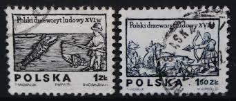 |
| OLX Poland | Dla Ciebie wszystko - drzeworyt - w kategorii Filatelistyka | 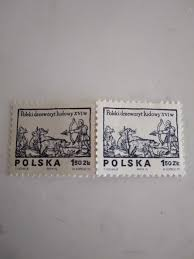 |
| eBay | Polska 1.50 zt Polski drzeworyt ludowy XVIw Poland Single Stamp | eBay | 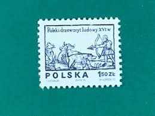 |
| eBay UK | 2 stamps "Series: Designs from 16th century woodcuts" Poland 1977 | eBay UK | 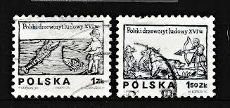 |
| The Philately | China 2000 Sc 3030-3037 Children's stamp design competition Mi 3148-3155 for sale at The Philately |  |
| Todocolección | polonia 1962 ivert 1185/96 *** protección de la - Buy Antique stamps of Poland on todocoleccion | 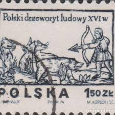 |
| Todocolección | sello usado de polonia 2002, yt 3720 - Buy Antique stamps of Poland on todocoleccion | 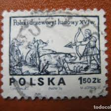 |
| eBay UK | POLAND STAMPS SG2337/8 POLISH FOLKLORE 1974 FINE USED | eBay UK |  |
| Todocolección | 1921 - polonia - aguila nacional - yvert 220 - Buy Antique stamps of Poland on todocoleccion | 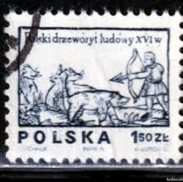 |
| The Philately | Poland 1974 Mi 2350-2351 Designs from 16th century woodcuts Sc 2070-2071 for sale at The Philately |  |
| Vecteezy | Philatelic Passion Exploring the World through Stamp Collections 40344841 Stock Photo at Vecteezy | 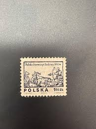 |
| Alamy | Postage stamp from Poland in the Designs from 16th century woodcut series issued in 1977 Stock Photo - Alamy |  |
| eBay | ANGEL IN BACKGROUND WAR XXV-LECIE LUDOWEGO WOSKA POLSKIEGO STAMP26 STAMP | eBay | 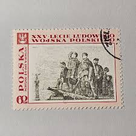 |